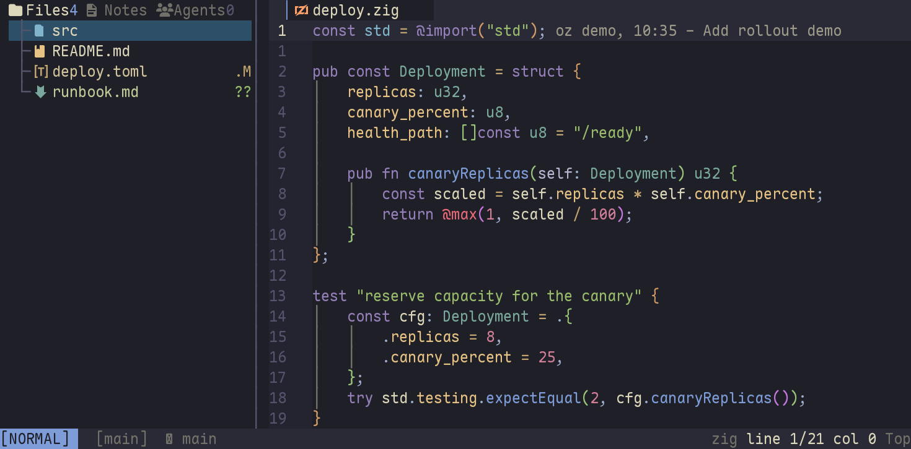

Edit in the
terminal.
oz is a modal editor written in Zig. Navigate with Vim keys, follow symbols with LSP and bring your own coding agent.

Install oz
Choose your build, extract the archive and open a file.
./oz src/main.zigBuild from source
Use Zig 0.17.0, the version used for release builds.
git clone https://github.com/niT-Tin/oz.git
cd oz
./.scripts/bootstrap-deps.sh
zig build -Doptimize=ReleaseFast -Dstrip
./zig-out/bin/ozConnect an agent
Start oz with an ACP preset. Open the panel with Space a.
OZ_ACP_AGENT=codex oz src/main.zigInstall and sign in to Codex first. The ACP adapter runs via npx.